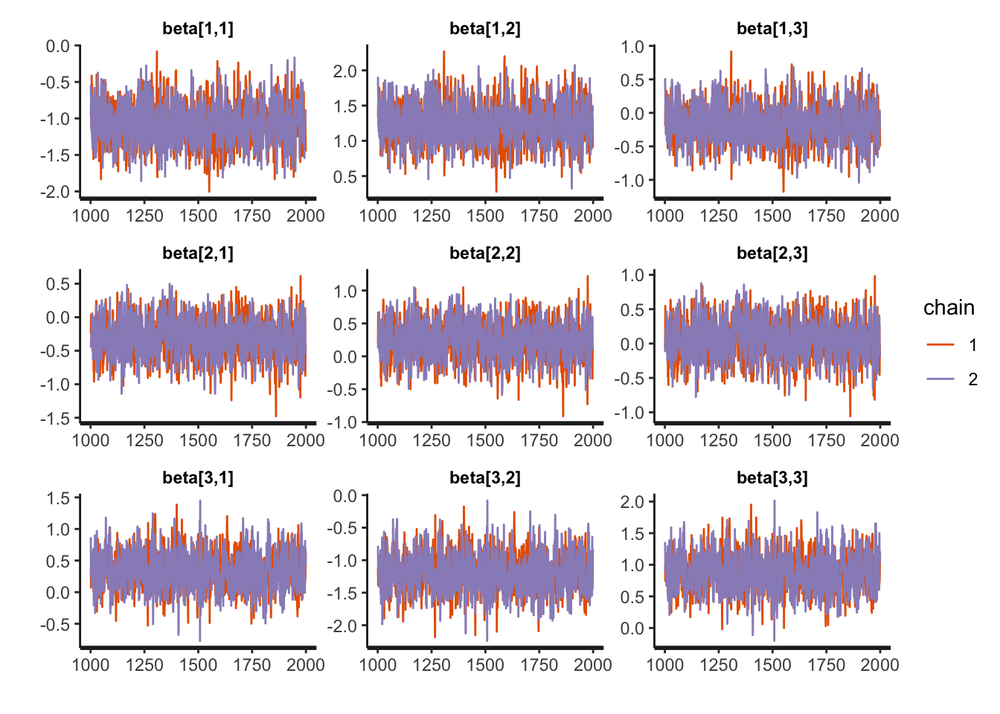
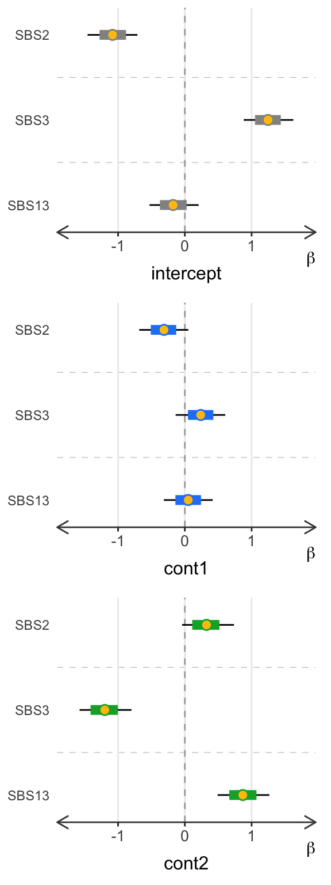
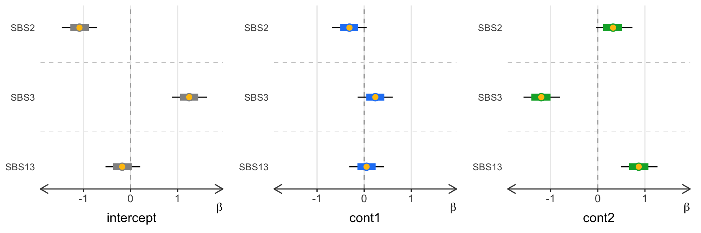
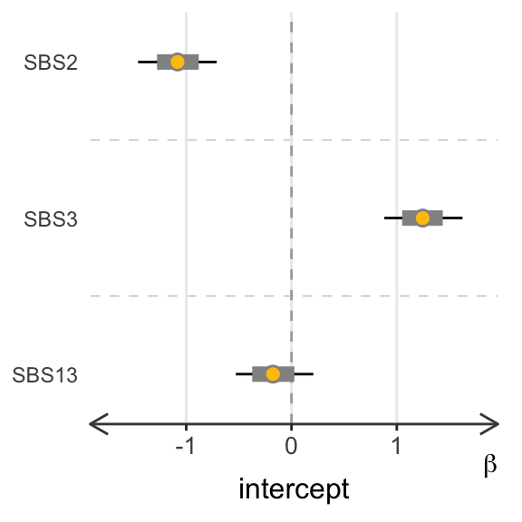
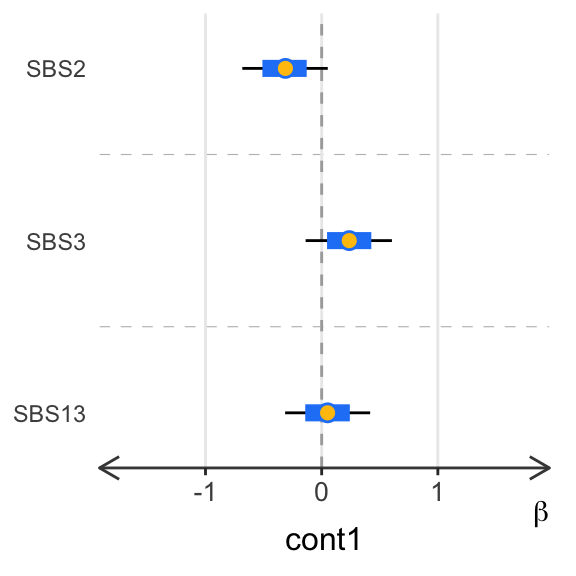
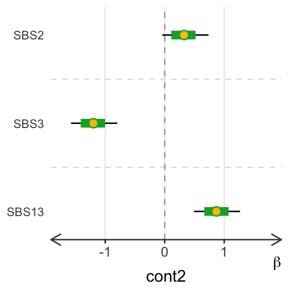
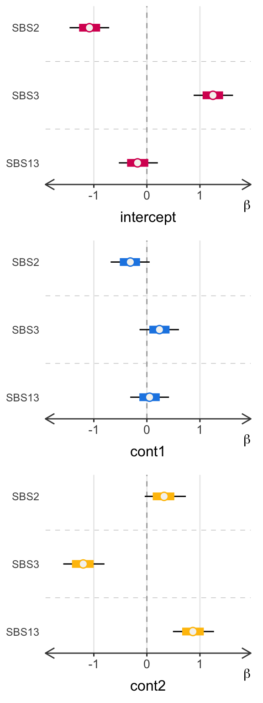

Abstract
Diffsig provides estimation of the associations between mutational signatures and risk factors to help better understand the cancer development process. Diffsig generates the associations using a hierarchical Bayesian Dirichlet-Multinomial model with a set of mutational signatures, mutation counts, and risk factors. Diffsig can test posterior estimates of the associations with any type of discrete or continuous risk factors of interest while considering the possible variance derived by datasets sequenced with various read depth. Diffsig package version: 0.0.0.9000
knitr::opts_chunk$set(cache=FALSE, message=FALSE, warning=FALSE)
library(diffsig, quietly = T)
library(rstan, quietly = T)## rstan (Version 2.21.8, GitRev: 2e1f913d3ca3)## For execution on a local, multicore CPU with excess RAM we recommend calling
## options(mc.cores = parallel::detectCores()).
## To avoid recompilation of unchanged Stan programs, we recommend calling
## rstan_options(auto_write = TRUE)Diffsig provides Bayesian analysis of the association between risk factors and mutational signatures, making use of the Stan and RStan software packages for inference (Carpenter et al. 2017; Stan Development Team 2020).
The authors of the associated Diffsig manuscript (diffsig?) are:
Ji-Eun Park*, Markia Smith, Sarah Van Alsten, Andrea Walens, Di Wu, Katherine A. Hoadley, Melissa A. Troester, Michael I. Love
The purpose of this vignette is to demonstrate the steps of Diffsig. For that, in this vignette, we work on simulated mutational counts and risk factors instead of real datasets. The simulation process does not include steps of generating mutational count matrix from .vcf or .maf files. Details for the count matrix generating process could be found in the manuscript public data preprocess.
A number of parameters need to be set to generate a simulated
dataset: + N: number of samples (integer) + K:
number of signatures (integer) + truetau: true value of tau
(numeric) + C_k: signature matrix (96xK matrix)
In our analysis, we used the COSMIC V3.2 signatures loaded from COSMIC where we
selected 5 signatures that are known to be associated with breast cancer
to avoid selecting an arbitrary set of signatures. If you have your own
signature matrix, you can load your signature matrix object named as
C_k.
N = 50
K = 3
truetau = 100C = read.table("https://cancer.sanger.ac.uk/signatures/documents/453/COSMIC_v3.2_SBS_GRCh38.txt", header = T, row.names = 1)
C_k = C[,c("SBS2","SBS3","SBS13")]Now, there are some additional parameters that should be set depending on the types of risk factors to be included:
NULL)NULL)NULL)NULL)So, for example, if you would like to include 2 continuous variable, you would do:
set.seed(123)
simdat = simdat_gen(N=N, K=K, truetau=truetau, C=C_k,
continuous=2, binary=NA, categorical=NA, cat_levels=NA, seed=123)Or, if you want to include 1 binary and 2 categorical variable with 3 and 4 levels:
simdat = simdat_gen(N=N, K=K, truetau=truetau, C=C_k,
continuous=NA, binary=1, categorical=2, cat_levels=c(3,4))Note that continuous, binary,
categorical, cat_levels are set to
NULL as default. Therefore, you do not need to specify
anything for variables you wish not to include.
# Same as the above examples
simdat_gen(N=N, K=K, truetau=truetau, C=C_k, continuous=2)
simdat_gen(N=N, K=K, truetau=truetau, C=C_k, binary=1, categorical=2, cat_levels=c(3,4))The simdat object includes the three components: true
association beta, mutational counts Y, and
risk factor matrix X.
head(simdat$truebeta)## [,1] [,2] [,3]
## [1,] -1.0666667 1.2333333 -0.16666667
## [2,] -0.3333333 0.2666667 0.06666667
## [3,] 0.2666667 -1.1333333 0.86666667head(simdat$Y)## [,1] [,2] [,3] [,4] [,5] [,6] [,7] [,8] [,9] [,10] [,11] [,12] [,13] [,14]
## [1,] 0 6 0 3 0 2 8 7 1 2 1 3 1 4
## [2,] 0 5 0 3 0 1 9 1 0 1 0 2 0 5
## [3,] 0 0 0 0 0 0 0 0 0 0 1 1 1 2
## [4,] 1 6 0 1 0 2 6 3 0 0 0 0 1 3
## [5,] 0 6 1 2 2 4 10 7 4 4 2 4 4 5
## [6,] 0 3 0 4 0 1 4 2 1 1 0 1 1 1
## [,15] [,16] [,17] [,18] [,19] [,20] [,21] [,22] [,23] [,24] [,25] [,26]
## [1,] 3 4 1 0 8 6 2 0 8 8 4 2
## [2,] 4 7 2 0 5 7 2 1 8 11 5 3
## [3,] 1 0 1 0 0 2 0 0 0 2 0 0
## [4,] 2 3 0 0 7 5 2 0 8 2 3 0
## [5,] 3 8 3 3 17 7 3 0 4 7 3 3
## [6,] 1 2 2 0 10 3 0 0 3 1 2 1
## [,27] [,28] [,29] [,30] [,31] [,32] [,33] [,34] [,35] [,36] [,37] [,38]
## [1,] 2 1 2 2 2 5 3 5 13 0 18 3
## [2,] 1 0 2 1 2 4 2 10 13 0 28 4
## [3,] 0 0 0 0 1 2 0 0 1 0 3 0
## [4,] 0 1 1 1 0 4 1 2 6 0 14 2
## [5,] 3 2 3 2 3 14 3 5 12 0 16 7
## [6,] 2 1 0 1 2 5 1 7 8 0 10 6
## [,39] [,40] [,41] [,42] [,43] [,44] [,45] [,46] [,47] [,48] [,49] [,50]
## [1,] 0 2 0 12 7 14 2 2 0 1 1 7
## [2,] 2 0 0 8 5 17 3 1 0 0 0 7
## [3,] 0 0 0 1 0 2 0 0 0 1 0 1
## [4,] 1 1 0 4 3 8 0 0 0 0 0 2
## [5,] 1 3 0 9 5 18 3 0 0 1 0 8
## [6,] 2 1 2 7 4 6 2 0 1 1 0 3head(simdat$X)## [,1] [,2] [,3] [,4] [,5] [,6]
## 1.00000000 1.00000000 1.0000000 1.000000 1.000000 1.0000000
## X_cont -0.08668123 -0.09482601 0.2007369 1.280809 -1.679328 1.6839436
## X_cont -1.24696075 -0.61472774 1.9520914 -1.272212 2.027136 -0.2805022
## [,7] [,8] [,9] [,10] [,11] [,12] [,13]
## 1.0000000 1.000000 1.0000000 1.0000000 1.000000 1.000000 1.0000000
## X_cont 0.5163816 2.508807 0.5609479 0.2549931 -1.011706 1.294792 0.8330080
## X_cont -0.5516741 -0.916545 2.5826611 -1.5886070 0.602483 1.486121 0.7682811
## [,14] [,15] [,16] [,17] [,18] [,19]
## 1.00000000 1.0000000 1.0000000 1.0000000 1.0000000 1.0000000
## X_cont -0.03424603 -0.7513888 -0.7013165 -0.1918858 -0.3090456 -1.0479283
## X_cont 0.50210239 0.9588983 -0.1736199 -0.2651857 -1.0695596 -0.8711099
## [,20] [,21] [,22] [,23] [,24] [,25]
## 1.0000000 1.0000000 1.00000000 1.0000000 1.0000000 1.0000000
## X_cont -0.0635118 1.0741931 -0.12253126 -1.1265081 -0.7849811 0.6946335
## X_cont -1.7003414 0.7502294 0.00142119 -0.8120663 -0.3255682 -0.9282199
## [,26] [,27] [,28] [,29] [,30] [,31]
## 1.0000000 1.000000 1.0000000 1.0000000 1.0000000 1.0000000
## X_cont -0.2944248 -1.270171 -0.5695445 -0.1068018 0.8932341 -0.1284385
## X_cont -0.9237508 -0.439858 -0.3735272 0.1100549 -0.9111522 -0.7404804
## [,32] [,33] [,34] [,35] [,36] [,37]
## 1.0000000 1.0000000 1.0000000 1.00000000 1.0000000 1.0000000
## X_cont 0.3451195 -3.1555966 -0.7389980 0.30256243 -1.1806037 0.4482177
## X_cont -1.0696543 0.8034378 0.3683268 0.09845793 0.2559048 -0.5764823
## [,38] [,39] [,40] [,41] [,42] [,43]
## 1.0000000 1.00000000 1.0000000 1.0000000 1.0000000 1.0000000
## X_cont 0.8080472 -0.14077476 1.2437694 -0.8990133 0.4080235 0.4177890
## X_cont -0.7429235 -0.04732575 0.2035231 1.5559518 -0.5461145 0.3745331
## [,44] [,45] [,46] [,47] [,48] [,49]
## 1.00000000 1.0000000 1.00000000 1.0000000 1.00000000 1.000000
## X_cont -0.85182520 -1.2774688 0.04894367 -0.4047213 1.68363673 1.229474
## X_cont -0.09170723 0.5001165 0.22873570 2.1382982 0.05395435 1.416977
## [,50]
## 1.0000000
## X_cont 0.2922042
## X_cont -0.6598209Once we obtain the mutation counts Y, risk factors
X, and mutational signatures matrix
C/C_K, we can estimate the association between
risk factors and mutational signatures using the function
diffsig_fit.
fit <- diffsig_fit(X=simdat$X, Y=simdat$Y, C=C_k, beta_sd=0.5,
chains=2, cores=2, seed=123)## [1] "total computation time 1.39149031639099mins"This runs the hierarchical Bayesian model that yields the posterior
estimation of the associations between the risk factors and mutational
signature beta. In our analysis, we use 4 chains and 4
cores with 2000 iterations.
Depending on your interest, sample-signature association from
Dirichlet sampling phi and the precision parameter
tau could be extracted from the model by including
pars=c("beta","tau","phi") in
diffsig_fit().
In order to check if the model converged, we recommend to check the
R-hat convergence measure.(Carpenter et al. 2017;
Stan Development Team 2020) This diagnostic measure shows how
well the posterior estimates are converging and mixing in split chains.
rstan recommends to use samples with R-hat values less than
1.05 and it seems that our simulation has a well-converged result with
all R-hats below 1.01. traceplots from rstan
is another common way to check convergence. The traceplot()
function shows how well the chains are mixing across chains, where a
poorly mixed result will show divergence between chains. Traceplots from
our simulated data shows a nicely mixed and well-converged result across
all 4 chains.
mu_tau_summary <- rstan::summary(fit, pars = c("beta"), probs = c(0.1, 0.9))$summary
data.frame(Rhat =mu_tau_summary[,"Rhat"])## Rhat
## beta[1,1] 1.000426
## beta[1,2] 1.000691
## beta[1,3] 1.001199
## beta[2,1] 1.001314
## beta[2,2] 1.001045
## beta[2,3] 1.001486
## beta[3,1] 1.000884
## beta[3,2] 1.001119
## beta[3,3] 1.000899rstan::traceplot(fit, pars="beta")
Additionally, Diffsig provides a function
diffsig_eval to generate evaluation for simulated data
results. The function outputs a list of three objects: summary
statistics matrix estimate with the desired credible
interval width and two measurements perc_coverage and
mean_rmse. + perc_coverage: percentage of true
values belonging within credible interval + mean_rmse:
average RMSE of each estimated beta values
The width of the credible interval can be specified with
credibleInterval where in default is set to
80%(ci_level=80).
(eval_res = diffsig_eval(betatrue = simdat$truebeta, fit = fit, ci_level = 80))## [[1]]
## truebeta estimate 10% 90% contain rmse
## 1 -1.06666667 -1.07908876 -1.45735900 -0.71041033 TRUE 0.012422098
## 2 1.23333333 1.24848774 0.88144166 1.62430041 TRUE 0.015154402
## 3 -0.16666667 -0.16845126 -0.52895888 0.20697072 TRUE 0.001784592
## 4 -0.33333333 -0.31503494 -0.68325749 0.05252355 TRUE 0.018298398
## 5 0.26666667 0.23396240 -0.13808199 0.60471371 TRUE 0.032704262
## 6 0.06666667 0.05188677 -0.31452263 0.41729709 TRUE 0.014779893
## 7 0.26666667 0.32825088 -0.04092641 0.73490293 TRUE 0.061584212
## 8 -1.13333333 -1.19617056 -1.57630794 -0.79921060 TRUE 0.062837227
## 9 0.86666667 0.87401703 0.49135026 1.26533768 TRUE 0.007350365
##
## $perc_coverage
## [1] 1
##
## $mean_rmse
## [1] 0.02521283It is ideal to have results with coverage greater than 80% or mean RMSE less than 0.1. In our example, we can see that the coverage percentage is 100% and mean RMSE around 0.03 which means that we acquired a good estimation. Coverage and RMSE can be improved by increasing the sample size which increases the power of the model.
Once we observe good convergence, we can then interpret the
estimations we obtained by plotting the posterior estimates.
diffsig_plot() is a modified version of the
stan_plot() function from the rstan package
which allows to group the segments by groups (or risk factors) for
easier visualization. Since each of the estimations are for the
K signatures and M risk factors, the rows are
labelled with the signatures with signature_labels and are
divided and colored for each risk factor with
riskfactor_labels.
numpars = prod(dim(simdat$truebeta)) #15
diffsig_plot(fit,
pars=1:numpars,
ci_level = 80,
signature_labels = c("SBS2","SBS3","SBS13"),
riskfactor_labels = c("intercept","cont1","cont2"),
ncol=1, outlist = F)
Each row shows the estimated association between each signature and risk factor. The circle points represent the point estimations, black lines represent the credible intervals (80% CI in this case), and the colored segments represent the 25% and 75% quantile, respectively.
In addition,
ncol: by default is set to 1, which indicates the plots
for each risk factor will be printed vertically in 1 column. If
ncol is set to the number of risk factors (including
intercept), plots will be printed horizontally. ncol must
be an integer between 1 to the number of risk factors.outlist: by default is set to FALSE, which
indicates the final output is a single plot with all plots aligned based
on the specified ncol. If set to TRUE, the
output will be a list of individual plots for each risk factor.diffsig_plot(fit,
pars=1:numpars,
ci_level = 80,
signature_labels = c("SBS2","SBS3","SBS13"),
riskfactor_labels = c("intercept","cont1","cont2"),
ncol=3, outlist = F)
diffsig_plot(fit,
pars=1:numpars,
ci_level = 80,
signature_labels = c("SBS2","SBS3","SBS13"),
riskfactor_labels = c("intercept","cont1","cont2"),
ncol=1, outlist = T)## [[1]]
##
## [[2]]
##
## [[3]]
The colors for the segments and estimation points can also be
tailored based on preference by specifying colors and
est_color parameters.
diffsig_plot(fit,
pars=1:numpars,
ci_level = 80,
signature_labels = c("SBS2","SBS3","SBS13"),
riskfactor_labels = c("intercept","cont1","cont2"),
colors=c("#D81B60","#1E88E5","#FFC107"),
est_color="#F5F3EF",
ncol=1,
outlist=FALSE)
Note that estimates must be interpreted within each risk factor and not be compared between estimates for different risk factors. For example, let’s call the association between SBS1 and SBS2 with risk factor 1 as \(\beta_{11}\) and \(\beta_{12}\), respectively, and association between SBS1 and SBS2 with risk factor 2 as \(\beta_{21}\) and \(\beta_{22}\) ,respectively. From the result we can see that ${11}=$0.05, ${12}=$0.33, \(\beta_{21}=\)NA, and \(\beta_{22}=\)NA. What we can compare is only between (\(\beta_{11}\) and \(\beta_{12}\)) or between (\(\beta_{21}\) and \(\beta_{22}\)), e.g. \(\beta_{11}<\beta_{12}\) so risk factor 1 has higher association with SBS2 than 1. What we cannot compare is across (\(\beta_{11}\),\(\beta_{12}\)) and (\(\beta_{21}\),\(\beta_{22}\)), e.g. we cannot say that risk factor 1 is more associated with SBS2 because \(\beta_{12}>\beta_{22}\). Reasons for such limitation can be found from the Discussion of our paper (link)
sessionInfo()## R version 4.1.2 (2021-11-01)
## Platform: x86_64-apple-darwin17.0 (64-bit)
## Running under: macOS Catalina 10.15.7
##
## Matrix products: default
## BLAS: /Library/Frameworks/R.framework/Versions/4.1/Resources/lib/libRblas.0.dylib
## LAPACK: /Library/Frameworks/R.framework/Versions/4.1/Resources/lib/libRlapack.dylib
##
## locale:
## [1] en_US.UTF-8/en_US.UTF-8/en_US.UTF-8/C/en_US.UTF-8/en_US.UTF-8
##
## attached base packages:
## [1] stats graphics grDevices utils datasets methods base
##
## other attached packages:
## [1] fastDummies_1.6.3 dirmult_0.1.3-5 rstan_2.21.8
## [4] ggplot2_3.4.0 StanHeaders_2.21.0-7 diffsig_0.0.0.9000
##
## loaded via a namespace (and not attached):
## [1] tidyselect_1.2.0 xfun_0.36 bslib_0.4.2 colorspace_2.1-0
## [5] vctrs_0.5.2 generics_0.1.3 htmltools_0.5.4 stats4_4.1.2
## [9] loo_2.5.1 yaml_2.3.7 utf8_1.2.2 rlang_1.0.6
## [13] pkgbuild_1.4.0 jquerylib_0.1.4 pillar_1.8.1 withr_2.5.0
## [17] glue_1.6.2 DBI_1.1.3 matrixStats_0.63.0 lifecycle_1.0.3
## [21] munsell_0.5.0 gtable_0.3.1 codetools_0.2-18 evaluate_0.20
## [25] labeling_0.4.2 inline_0.3.19 knitr_1.42 callr_3.7.3
## [29] fastmap_1.1.0 ps_1.7.2 parallel_4.1.2 fansi_1.0.4
## [33] highr_0.10 Rcpp_1.0.10 scales_1.2.1 cachem_1.0.6
## [37] RcppParallel_5.1.6 jsonlite_1.8.4 farver_2.1.1 gridExtra_2.3
## [41] digest_0.6.31 processx_3.8.0 dplyr_1.0.10 cowplot_1.1.1
## [45] grid_4.1.2 cli_3.6.0 tools_4.1.2 magrittr_2.0.3
## [49] sass_0.4.5 tibble_3.1.8 crayon_1.5.2 pkgconfig_2.0.3
## [53] prettyunits_1.1.1 assertthat_0.2.1 rmarkdown_2.20 rstudioapi_0.14
## [57] R6_2.5.1 compiler_4.1.2